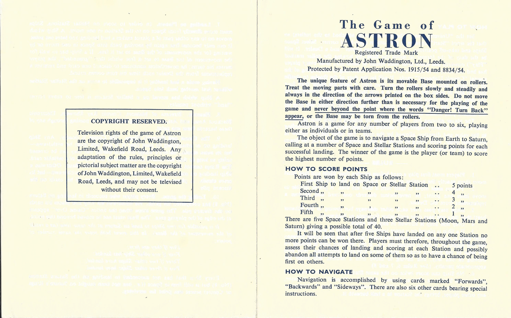

Astron was a project I made during my first year at university as part of an attempt to preserve a particularly rare family favourite board game.
Unfortunately, we only had the one copy at the time, and due to moving parts, it’s quite fragile. As part of the project, I created an accurate version
of the board digitally from photos I’d made of our copy, and followed the rules as best as I could. At this point in my degree, I was most familiar with
Java, so built the game to render to the HTML canvas.
Round of Astron, played in real time. The gaps where console commands were entered were not sped up
A physical copy of Astron (in better condition than ours)
Why I made it
I’d been saying to family members for a while that I wanted to have a go at making a videogame, but had never actually done it. After I’d
learned some of the required skills, I thought it’d be a good time to have a go. Not to mention, there weren’t any parts of the course that year
(or for the one after) which would involve making anything like a game, so I decided it would be a good time to get a head start, even if
I never came back to the project, or used any of the techniques I learned while making it.
How it works
Using the HTML canvas, I would display a grid of images, which moved on each turn. I created a finite deck
of cards from a hard coded array, which allowed a level of realism in the card shuffling. The ships were then drawn directly on top of the board to
display their relevant positions. I also wanted to create automatic scoring, an automatic game loop which allowed players to play their cards, rather
than entering movements, and implement features such as forcing a ship which is 1 space behind another to be pushed a space backwards as denoted by
the rules.
Front and back cover of the rule book
Inside of the rule book
Observations
A lot of the features I wanted to implement are missing, the redrawing process is fairly slow, and actually playing the game is
somewhat difficult. Having said all this, for a project I worked on during term time, between other assignments, using new tech that was
new to me, I'm impressed I got as far as I did. To boot, after having completed my degree and worked a further 3 years in industry,
going back through the code now may as well be hieroglyphics- a curse of having improved since I completed this project. What interests
me looking back the most however, is how much tech I touched on without actually knowing what it was. To do everything I wanted, the game
would have required collision detection and resolution, serialisation, and eventually, even some networking. While I didn't manage to
do a lot of this in the time I had, I'm proud I had a go.
Digital version with 3 players on the board (bases 1, 5 and 6)
How successful has it been?
Ultimately, on the release day, I broke the code which took player commands while trying to fix game breaking issues with collision resolution.
Not to mention, between running this on an early microsoft surface, the actual rendering was fairly laggy too. Lastly, I remember there being a fair
few off-by-1 errors, but given the code structure, they were difficult to pin down, and I ran out of time. On the day, I ended up running this with
the developer commands I'd added, and had to manage collisions myself. What I had wasn't the game I'd wanted to show off, but with a forgiving audience,
and the fact that I even had anything to show at all for a first major project, it still went down well.
Some of the commands between the first screenshot and the results below
Digital version moved on one space, 2 of the players have been wiped out
What would I do differently if I started over?
The first thing I'd have done is either delay launch, or find another way to give myself more time. I believe I started this early March that year between coursework,
and exams which were fast approaching after the holidays in April, so it would have been easy to delay until summer, so some of the pressure would have been removed. If I wasn't
restricting myself to what I knew at the time however, I think I'd go back and remake it in another game engine. Potentially shuttle engine, or
unity given my experience since then. In fact, where I spent a while making this initially, a remake (using the same assets) would probably fit
neatly into a game jam with my current skillset. I would also go ahead and make it properly multiplayer, aiming for some sort of Kahoot adjacent clone, with players able to play
on their phones. I could even add different modes to allow all moves to happen at the same time, for a little more chaos. I think I'd also add AI players, and potentially some new
mechanics without wanting to change the spirit of the game too much. I feel like given the family's history with this game, and its age, a little shaking up (as a separate mode)
couldn't hurt. More importantly though, it'd be a fun opportunity to exercise some flare.
How I've been able to use it
Astron was probably one of the most interesting projects I've ever worked on, simply because it was the first game I ever made on my own. It was also the first large project I'd ever done.
Having come out of college, and into my first year at university, most of what I was working on for assignments were fairly small, so to start this on the side was a big deal. While I haven't been
able to recycle any of it yet (watch this space, I have a little free time at the moment, and you can refer back to the previous section to see what I have in mind), the biggest impact this
had on my development as a software engineer, was that I was a little bit less afraid of starting large projects, which I'm very grateful to myself for.